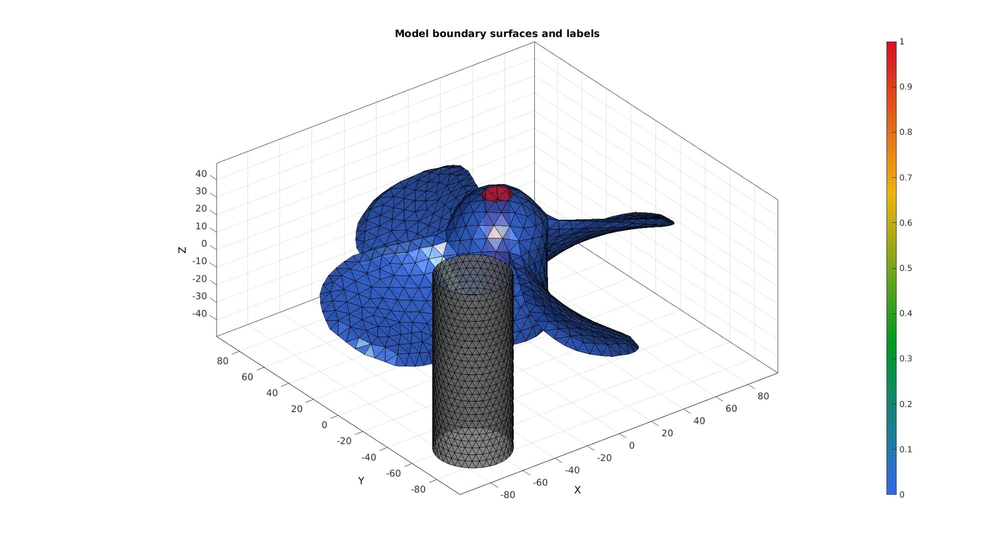
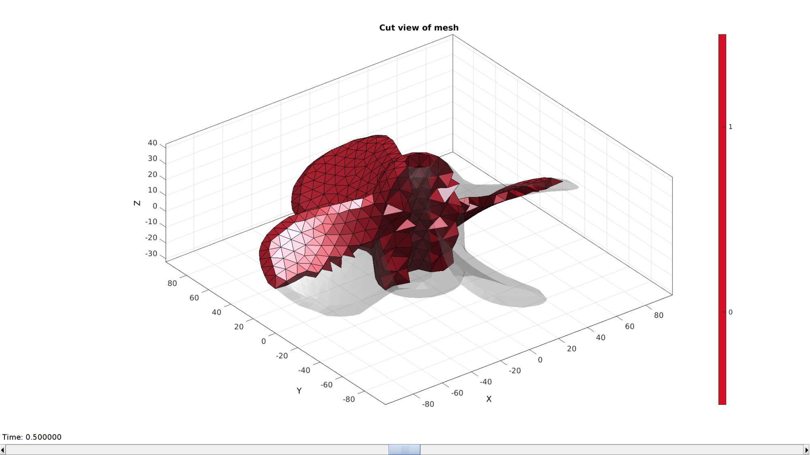
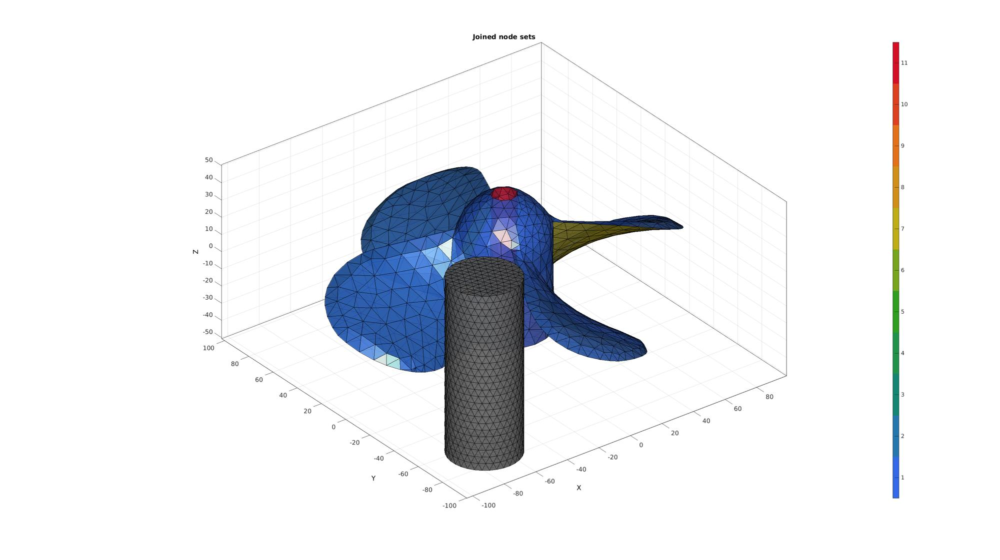
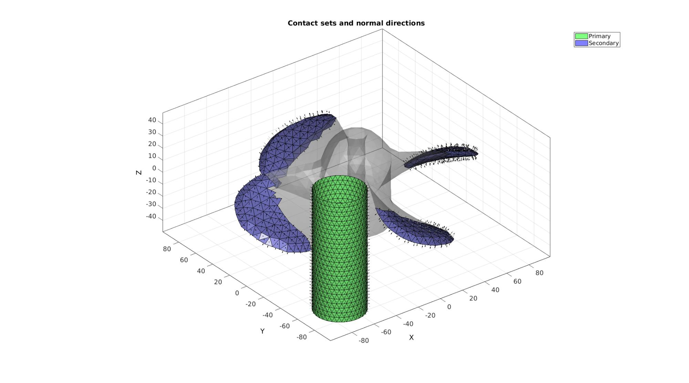
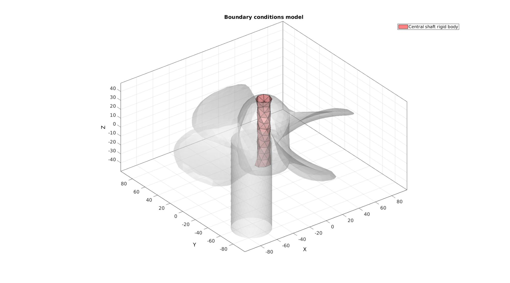
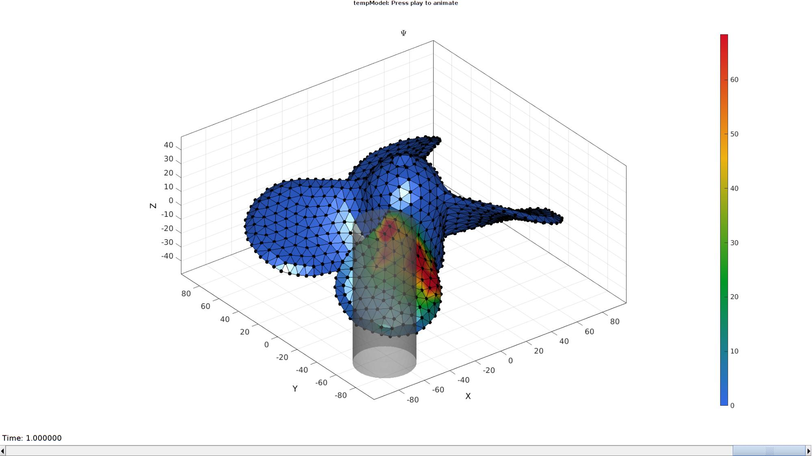

DEMO_febio_0040_propeller_contact
Below is a demonstration for:
- Building geometry for a slab with hexahedral elements, and a triangulated sphere.
- Defining the boundary conditions
- Coding the febio structure
- Running the model
- Importing and visualizing the displacement results
Contents
- Keywords
- Plot settings
- Control parameters
- Creating model geometry and mesh
- Creating triangulated bar mesh
- Mesh using tetrahedral elements
- Visualizing mesh using meshView, see also anim8
- Joining node sets
- Define contact surfaces
- Define central cylinder body
- Defining the FEBio input structure
- Quick viewing of the FEBio input file structure
- Exporting the FEBio input file
- Running the FEBio analysis
- Import FEBio results
Keywords
- febio_spec version 4.0
- febio, FEBio
- indentation
- contact, sliding, sticky, friction
- rigid body constraints
- hexahedral elements, hex8
- triangular elements, tri3
- slab, block, rectangular
- sphere
- static, solid
- hyperelastic, Ogden
- displacement logfile
- stress logfile
clear; close all; clc;
Plot settings
fontSize=15; faceAlpha1=0.8; faceAlpha2=0.3; markerSize=40; lineWidth=3; markerSize2=25;
Control parameters
% Path names defaultFolder = fileparts(fileparts(mfilename('fullpath'))); savePath=fullfile(defaultFolder,'data','temp'); % Defining file names febioFebFileNamePart='tempModel'; febioFebFileName=fullfile(savePath,[febioFebFileNamePart,'.feb']); %FEB file name febioLogFileName=[febioFebFileNamePart,'.txt']; %FEBio log file name febioLogFileName_disp=[febioFebFileNamePart,'_disp_out.txt']; %Log file name for exporting displacement febioLogFileName_strainEnergy=[febioFebFileNamePart,'_energy_out.txt']; %Log file name for exporting strain energy density % Propeller pointSpacing=8; % Bar barRadius=20; % Define prescribed rotation prescribedRotation=pi/3; %Material parameters (MPa if spatial units are mm) E_youngs1=17000; %Youngs modulus nu1=0.25; %Poissons ratio materialDensity=1e-9; %Density (not required for static analysis) % FEA control settings numTimeSteps=10; %Number of time steps desired max_refs=25; %Max reforms max_ups=0; %Set to zero to use full-Newton iterations opt_iter=12; %Optimum number of iterations max_retries=5; %Maximum number of retires dtmin=(1/numTimeSteps)/100; %Minimum time step size dtmax=(1/numTimeSteps); %Maximum time step size symmetric_stiffness=0; min_residual=1e-20; runMode='external';% 'internal' or 'external' %Contact parameters contactPenalty=1; laugon=0; minaug=1; maxaug=10; fric_coeff=0.1;
Creating model geometry and mesh
% Import STL surface model fileName=fullfile(defaultFolder,'data','STL','propeller.stl'); [stlStruct] = import_STL(fileName); % Access the data from the STL struct F=stlStruct.solidFaces{1}; %Faces V=stlStruct.solidVertices{1}; %Vertices % Merging nodes [F,V]=mergeVertices(F,V); % Shift around mean V=V-mean(V,1); % % Remeshing and labelling optionStructRemesh.pointSpacing=pointSpacing; %Set desired point spacing optionStructRemesh.disp_on=0; [Fp,Vp]=ggremesh(F,V,optionStructRemesh); D=sqrt(sum(Vp(:,[1 2]).^2,2)); N=patchNormal(Fp,Vp); Cp=all(D(Fp)<=10,2) & abs(N(:,3))<=0.5; w=max(abs(max(Vp,[],1)-min(Vp,[],1))); %Width measure pointSpacing=mean(patchEdgeLengths(Fp,Vp));
Creating triangulated bar mesh
h=w/2; nh=round(h/(pointSpacing/2)); nh=iseven(nh)+nh; nr=round((2*pi*barRadius)/(pointSpacing/2)); optionStruct.cylRadius=barRadius; optionStruct.numRadial=nr; optionStruct.cylHeight=h; optionStruct.numHeight=nh; optionStruct.meshType='tri'; optionStruct.closeOpt=0; [Fc,Vc]=patchcylinder(optionStruct); %Shift bar Vc(:,1)=Vc(:,1)-w/3; Vc(:,2)=Vc(:,2)-w/3; center_of_mass=mean(Vc,1);
Plotting model boundary surfaces and a cut view
hFig=cFigure; title('Model boundary surfaces and labels','FontSize',fontSize); gpatch(Fp,Vp,Cp,'k',faceAlpha1); gpatch(Fc,Vc,'kw','k',faceAlpha1); colormap(gjet(250)); colorbar; axisGeom(gca,fontSize); camlight headlight; drawnow;
Mesh using tetrahedral elements
stringOpt='-pq1.2AaY'; inputStruct.stringOpt=stringOpt; inputStruct.Faces=Fp; inputStruct.Nodes=Vp; inputStruct.holePoints=[]; inputStruct.faceBoundaryMarker=Cp; %Face boundary markers inputStruct.regionPoints=getInnerPoint(Fp,Vp); %region points inputStruct.regionA=tetVolMeanEst(Fp,Vp)*5; %Volume for regular tets inputStruct.minRegionMarker=2; %Minimum region marker % Mesh model using tetrahedral elements using tetGen [meshOutput]=runTetGen(inputStruct); %Run tetGen % Access model element and patch data Fb=meshOutput.facesBoundary; Cb=meshOutput.boundaryMarker; V=meshOutput.nodes; CE=meshOutput.elementMaterialID; E=meshOutput.elements;
%%%%%%%%%%%%%%%%%%%%%%%%%%%%%%%%%%%%%%%%%%%%% --- TETGEN Tetrahedral meshing --- 20-Apr-2023 18:05:53 %%%%%%%%%%%%%%%%%%%%%%%%%%%%%%%%%%%%%%%%%%%%% --- Writing SMESH file --- 20-Apr-2023 18:05:53 ----> Adding node field ----> Adding facet field ----> Adding holes specification ----> Adding region specification --- Done --- 20-Apr-2023 18:05:53 --- Running TetGen to mesh input boundary--- 20-Apr-2023 18:05:53 Opening /mnt/data/MATLAB/GIBBON/data/temp/temp.smesh. Delaunizing vertices... Delaunay seconds: 0.005485 Creating surface mesh ... Surface mesh seconds: 0.001866 Recovering boundaries... Boundary recovery seconds: 0.002999 Removing exterior tetrahedra ... Spreading region attributes. Exterior tets removal seconds: 0.001977 Recovering Delaunayness... Delaunay recovery seconds: 0.001714 Refining mesh... Refinement seconds: 0.004088 Smoothing vertices... Mesh smoothing seconds: 0.003553 Improving mesh... Mesh improvement seconds: 0.001235 Writing /mnt/data/MATLAB/GIBBON/data/temp/temp.1.node. Writing /mnt/data/MATLAB/GIBBON/data/temp/temp.1.ele. Writing /mnt/data/MATLAB/GIBBON/data/temp/temp.1.face. Writing /mnt/data/MATLAB/GIBBON/data/temp/temp.1.edge. Output seconds: 0.020581 Total running seconds: 0.04364 Statistics: Input points: 1139 Input facets: 2278 Input segments: 3417 Input holes: 0 Input regions: 1 Mesh points: 1210 Mesh tetrahedra: 3689 Mesh faces: 8517 Mesh faces on exterior boundary: 2278 Mesh faces on input facets: 2278 Mesh edges on input segments: 3417 Steiner points inside domain: 71 --- Done --- 20-Apr-2023 18:05:53 %%%%%%%%%%%%%%%%%%%%%%%%%%%%%%%%%%%%%%%%%%%%% --- Importing TetGen files --- 20-Apr-2023 18:05:53 --- Done --- 20-Apr-2023 18:05:53
Visualizing mesh using meshView, see also anim8
meshView(meshOutput);
Joining node sets
Fc=Fc+size(V,1); %Fixed element indices V=[V;Vc;]; %Combined node sets
Plotting joined geometry
cFigure; title('Joined node sets','FontSize',fontSize); hold on; gpatch(Fb,V,Cp,'k',faceAlpha1); gpatch(Fc,V,'kw','k',faceAlpha1); colormap(gjet(6)); icolorbar; axisGeom(gca,fontSize); camlight headlight; drawnow;
Define contact surfaces
Vbc=patchCentre(Fb,V); Db=sqrt(sum(Vbc(:,[1 2]).^2,2)); Vcc=patchCentre(Fc,V); Dc=sqrt(sum(Vcc(:,[1 2]).^2,2)); % The rigid Primary surface of the sphere F_contact_primary=Fc; % The deformable Secondary surface of the slab F_contact_secondary=fliplr(Fb(Cb==0 & Db>=(min(Dc(:))-pointSpacing),:));
Visualize contact surfaces
cFigure; hold on; title('Contact sets and normal directions','FontSize',fontSize); gpatch(Fb,V,'kw','none',faceAlpha2); hl(1)=gpatch(F_contact_primary,V,'gw','k',1); patchNormPlot(F_contact_primary,V); hl(2)=gpatch(F_contact_secondary,V,'bw','k',1); patchNormPlot(F_contact_secondary,V); legend(hl,{'Primary','Secondary'}); axisGeom(gca,fontSize); camlight headlight; drawnow; clear hl;
Define central cylinder body
F_shaft=Fb(Cb==1,:);
Visualize BC's
hf=cFigure; title('Boundary conditions model','FontSize',fontSize); hold on; gpatch(Fb,V,'w','none',faceAlpha2); gpatch(Fc,V,'w','none',faceAlpha2); hl(1)=gpatch(F_shaft,V,'rw','k',1); legend(hl,{'Central shaft rigid body'}); axisGeom(gca,fontSize); camlight headlight; drawnow;
Defining the FEBio input structure
See also febioStructTemplate and febioStruct2xml and the FEBio user manual.
%Get a template with default settings [febio_spec]=febioStructTemplate; %febio_spec version febio_spec.ATTR.version='4.0'; %Module section febio_spec.Module.ATTR.type='solid'; %Control section febio_spec.Control.analysis='STATIC'; febio_spec.Control.time_steps=numTimeSteps; febio_spec.Control.step_size=1/numTimeSteps; febio_spec.Control.solver.max_refs=max_refs; febio_spec.Control.solver.qn_method.max_ups=max_ups; febio_spec.Control.solver.symmetric_stiffness=symmetric_stiffness; febio_spec.Control.time_stepper.dtmin=dtmin; febio_spec.Control.time_stepper.dtmax=dtmax; febio_spec.Control.time_stepper.max_retries=max_retries; febio_spec.Control.time_stepper.opt_iter=opt_iter; %Material section materialName1='Material1'; febio_spec.Material.material{1}.ATTR.name=materialName1; febio_spec.Material.material{1}.ATTR.type='neo-Hookean'; febio_spec.Material.material{1}.ATTR.id=1; febio_spec.Material.material{1}.E=E_youngs1; febio_spec.Material.material{1}.v=nu1; febio_spec.Material.material{1}.density=materialDensity; materialName2='Material2'; febio_spec.Material.material{2}.ATTR.name=materialName2; febio_spec.Material.material{2}.ATTR.type='rigid body'; febio_spec.Material.material{2}.ATTR.id=2; febio_spec.Material.material{2}.density=materialDensity; febio_spec.Material.material{2}.center_of_mass=mean(V(unique(Fc),:),1); materialName3='Material3'; febio_spec.Material.material{3}.ATTR.name=materialName3; febio_spec.Material.material{3}.ATTR.type='rigid body'; febio_spec.Material.material{3}.ATTR.id=3; febio_spec.Material.material{3}.density=materialDensity; febio_spec.Material.material{3}.center_of_mass=mean(V(unique(F_shaft),:),1); %Mesh section % -> Nodes febio_spec.Mesh.Nodes{1}.ATTR.name='nodeSet_all'; %The node set name febio_spec.Mesh.Nodes{1}.node.ATTR.id=(1:size(V,1))'; %The node id's3 febio_spec.Mesh.Nodes{1}.node.VAL=V; %The nodel coordinates % -> Elements partName1='Part1'; febio_spec.Mesh.Elements{1}.ATTR.name=partName1; %Name of this part febio_spec.Mesh.Elements{1}.ATTR.type='tet4'; %Element type febio_spec.Mesh.Elements{1}.elem.ATTR.id=(1:1:size(E,1))'; %Element id's febio_spec.Mesh.Elements{1}.elem.VAL=E; %The element matrix partName2='Part2'; febio_spec.Mesh.Elements{2}.ATTR.name=partName2; %Name of this part febio_spec.Mesh.Elements{2}.ATTR.type='tri3'; %Element type febio_spec.Mesh.Elements{2}.elem.ATTR.id=size(E,1)+(1:1:size(Fc,1))'; %Element id's febio_spec.Mesh.Elements{2}.elem.VAL=Fc; %The element matrix partName3='Part3'; febio_spec.Mesh.Elements{3}.ATTR.name=partName3; %Name of this part febio_spec.Mesh.Elements{3}.ATTR.type='tri3'; %Element type febio_spec.Mesh.Elements{3}.elem.ATTR.id=size(E,1)+size(Fc,1)+(1:1:size(F_shaft,1))'; %Element id's febio_spec.Mesh.Elements{3}.elem.VAL=F_shaft; %The element matrix %MeshDomains section febio_spec.MeshDomains.SolidDomain.ATTR.name=partName1; febio_spec.MeshDomains.SolidDomain.ATTR.mat=materialName1; febio_spec.MeshDomains.ShellDomain{1}.ATTR.name=partName2; febio_spec.MeshDomains.ShellDomain{1}.ATTR.mat=materialName2; febio_spec.MeshDomains.ShellDomain{2}.ATTR.name=partName3; febio_spec.MeshDomains.ShellDomain{2}.ATTR.mat=materialName3; % -> Surfaces surfaceName1='contactSurface1'; febio_spec.Mesh.Surface{1}.ATTR.name=surfaceName1; febio_spec.Mesh.Surface{1}.tri3.ATTR.id=(1:1:size(F_contact_primary,1))'; febio_spec.Mesh.Surface{1}.tri3.VAL=F_contact_primary; surfaceName2='contactSurface2'; febio_spec.Mesh.Surface{2}.ATTR.name=surfaceName2; febio_spec.Mesh.Surface{2}.tri3.ATTR.id=(1:1:size(F_contact_secondary,1))'; febio_spec.Mesh.Surface{2}.tri3.VAL=F_contact_secondary; % -> Surface pairs contactPairName1='ContactPair1'; febio_spec.Mesh.SurfacePair{1}.ATTR.name=contactPairName1; febio_spec.Mesh.SurfacePair{1}.primary=surfaceName1; febio_spec.Mesh.SurfacePair{1}.secondary=surfaceName2; %Rigid section % ->Rigid body fix boundary conditions febio_spec.Rigid.rigid_bc{1}.ATTR.name='RigidFix_RB2'; febio_spec.Rigid.rigid_bc{1}.ATTR.type='rigid_fixed'; febio_spec.Rigid.rigid_bc{1}.rb=2; febio_spec.Rigid.rigid_bc{1}.Rx_dof=1; febio_spec.Rigid.rigid_bc{1}.Ry_dof=1; febio_spec.Rigid.rigid_bc{1}.Rz_dof=1; febio_spec.Rigid.rigid_bc{1}.Ru_dof=1; febio_spec.Rigid.rigid_bc{1}.Rv_dof=1; febio_spec.Rigid.rigid_bc{1}.Rw_dof=1; febio_spec.Rigid.rigid_bc{2}.ATTR.name='RigidFix_RB3'; febio_spec.Rigid.rigid_bc{2}.ATTR.type='rigid_fixed'; febio_spec.Rigid.rigid_bc{2}.rb=3; febio_spec.Rigid.rigid_bc{2}.Rx_dof=1; febio_spec.Rigid.rigid_bc{2}.Ry_dof=1; febio_spec.Rigid.rigid_bc{2}.Rz_dof=1; febio_spec.Rigid.rigid_bc{2}.Ru_dof=1; febio_spec.Rigid.rigid_bc{2}.Rv_dof=1; % ->Rigid body prescribe boundary conditions febio_spec.Rigid.rigid_bc{3}.ATTR.name='RigidPrescribed_rot_RB3'; febio_spec.Rigid.rigid_bc{3}.ATTR.type='rigid_rotation'; febio_spec.Rigid.rigid_bc{3}.rb=3; febio_spec.Rigid.rigid_bc{3}.dof='Rw'; febio_spec.Rigid.rigid_bc{3}.value.ATTR.lc=1; febio_spec.Rigid.rigid_bc{3}.value.VAL=prescribedRotation; febio_spec.Rigid.rigid_bc{3}.relative=0; %Contact section febio_spec.Contact.contact{1}.ATTR.type='sliding-elastic'; febio_spec.Contact.contact{1}.ATTR.surface_pair=contactPairName1; febio_spec.Contact.contact{1}.two_pass=1; febio_spec.Contact.contact{1}.laugon=laugon; febio_spec.Contact.contact{1}.tolerance=0.2; febio_spec.Contact.contact{1}.gaptol=0; febio_spec.Contact.contact{1}.minaug=minaug; febio_spec.Contact.contact{1}.maxaug=maxaug; febio_spec.Contact.contact{1}.search_tol=0.01; febio_spec.Contact.contact{1}.search_radius=0.1*sqrt(sum((max(V,[],1)-min(V,[],1)).^2,2)); febio_spec.Contact.contact{1}.symmetric_stiffness=0; febio_spec.Contact.contact{1}.auto_penalty=1; febio_spec.Contact.contact{1}.penalty=contactPenalty; febio_spec.Contact.contact{1}.fric_coeff=fric_coeff; %LoadData section % -> load_controller febio_spec.LoadData.load_controller{1}.ATTR.name='LC_1'; febio_spec.LoadData.load_controller{1}.ATTR.id=1; febio_spec.LoadData.load_controller{1}.ATTR.type='loadcurve'; febio_spec.LoadData.load_controller{1}.interpolate='LINEAR'; %febio_spec.LoadData.load_controller{1}.extend='CONSTANT'; febio_spec.LoadData.load_controller{1}.points.pt.VAL=[0 0; 1 1]; %Output section % -> log file febio_spec.Output.logfile.ATTR.file=febioLogFileName; febio_spec.Output.logfile.node_data{1}.ATTR.file=febioLogFileName_disp; febio_spec.Output.logfile.node_data{1}.ATTR.data='ux;uy;uz'; febio_spec.Output.logfile.node_data{1}.ATTR.delim=','; febio_spec.Output.logfile.element_data{1}.ATTR.file=febioLogFileName_strainEnergy; febio_spec.Output.logfile.element_data{1}.ATTR.data='sed'; febio_spec.Output.logfile.element_data{1}.ATTR.delim=','; febio_spec.Output.logfile.element_data{1}.ATTR.elem_set=partName1; % Plotfile section febio_spec.Output.plotfile.compression=0;
Quick viewing of the FEBio input file structure
The febView function can be used to view the xml structure in a MATLAB figure window.
febView(febio_spec); %Viewing the febio file
Exporting the FEBio input file
Exporting the febio_spec structure to an FEBio input file is done using the febioStruct2xml function.
febioStruct2xml(febio_spec,febioFebFileName); %Exporting to file and domNode
Running the FEBio analysis
To run the analysis defined by the created FEBio input file the runMonitorFEBio function is used. The input for this function is a structure defining job settings e.g. the FEBio input file name. The optional output runFlag informs the user if the analysis was run succesfully.
febioAnalysis.run_filename=febioFebFileName; %The input file name febioAnalysis.run_logname=febioLogFileName; %The name for the log file febioAnalysis.disp_on=1; %Display information on the command window febioAnalysis.runMode=runMode; [runFlag]=runMonitorFEBio(febioAnalysis);%START FEBio NOW!!!!!!!!
%%%%%%%%%%%%%%%%%%%%%%%%%%%%%%%%%%%%%%%%%%%%%%%%%%%%%%%%%%%%%%%%%%%%%%%%%%%
--------> RUNNING/MONITORING FEBIO JOB <-------- 20-Apr-2023 18:06:01
FEBio path: /home/kevin/FEBioStudio2/bin/febio4
# Attempt removal of existing log files 20-Apr-2023 18:06:01
* Removal succesful 20-Apr-2023 18:06:01
# Attempt removal of existing .xplt files 20-Apr-2023 18:06:01
* Removal succesful 20-Apr-2023 18:06:01
# Starting FEBio... 20-Apr-2023 18:06:01
Max. total analysis time is: Inf s
* Waiting for log file creation 20-Apr-2023 18:06:01
Max. wait time: 30 s
* Log file found. 20-Apr-2023 18:06:01
# Parsing log file... 20-Apr-2023 18:06:01
number of iterations : 4 20-Apr-2023 18:06:02
number of reformations : 4 20-Apr-2023 18:06:02
------- converged at time : 0.1 20-Apr-2023 18:06:02
number of iterations : 4 20-Apr-2023 18:06:02
number of reformations : 4 20-Apr-2023 18:06:02
------- converged at time : 0.2 20-Apr-2023 18:06:02
number of iterations : 7 20-Apr-2023 18:06:02
number of reformations : 7 20-Apr-2023 18:06:02
------- converged at time : 0.3 20-Apr-2023 18:06:02
number of iterations : 6 20-Apr-2023 18:06:03
number of reformations : 6 20-Apr-2023 18:06:03
------- converged at time : 0.4 20-Apr-2023 18:06:03
number of iterations : 6 20-Apr-2023 18:06:03
number of reformations : 6 20-Apr-2023 18:06:03
------- converged at time : 0.5 20-Apr-2023 18:06:03
number of iterations : 7 20-Apr-2023 18:06:03
number of reformations : 7 20-Apr-2023 18:06:03
------- converged at time : 0.6 20-Apr-2023 18:06:03
number of iterations : 7 20-Apr-2023 18:06:04
number of reformations : 7 20-Apr-2023 18:06:04
------- converged at time : 0.7 20-Apr-2023 18:06:04
number of iterations : 7 20-Apr-2023 18:06:04
number of reformations : 7 20-Apr-2023 18:06:04
------- converged at time : 0.8 20-Apr-2023 18:06:04
number of iterations : 9 20-Apr-2023 18:06:05
number of reformations : 9 20-Apr-2023 18:06:05
------- converged at time : 0.9 20-Apr-2023 18:06:05
number of iterations : 7 20-Apr-2023 18:06:07
number of reformations : 7 20-Apr-2023 18:06:07
------- converged at time : 0.983333 20-Apr-2023 18:06:07
number of iterations : 10 20-Apr-2023 18:06:08
number of reformations : 10 20-Apr-2023 18:06:08
------- converged at time : 1 20-Apr-2023 18:06:08
Elapsed time : 0:00:06 20-Apr-2023 18:06:08
N O R M A L T E R M I N A T I O N
# Done 20-Apr-2023 18:06:08
%%%%%%%%%%%%%%%%%%%%%%%%%%%%%%%%%%%%%%%%%%%%%%%%%%%%%%%%%%%%%%%%%%%%%%%%%%%
Import FEBio results
if runFlag==1 %i.e. a succesful run
Importing nodal displacements from a log file
dataStruct=importFEBio_logfile(fullfile(savePath,febioLogFileName_disp),0,1);
%Access data
N_disp_mat=dataStruct.data; %Displacement
timeVec=dataStruct.time; %Time
%Create deformed coordinate set
V_DEF=N_disp_mat+repmat(V,[1 1 size(N_disp_mat,3)]);
Importing element stress from a log file
dataStruct=importFEBio_logfile(fullfile(savePath,febioLogFileName_strainEnergy),0,1);
%Access data
E_energy=dataStruct.data;
Plotting the simulated results using anim8 to visualize and animate deformations
[CV]=faceToVertexMeasure(E,V,E_energy(:,:,end));
% Create basic view and store graphics handle to initiate animation
hf=cFigure; %Open figure
gtitle([febioFebFileNamePart,': Press play to animate']);
title('$\Psi$','Interpreter','Latex')
hp1=gpatch(Fb,V_DEF(:,:,end),CV,'k',1); %Add graphics object to animate
hp1.FaceColor='interp';
hp2=gpatch(Fc,V_DEF(:,:,end),'kw','none',0.5); %Add graphics object to animate
axisGeom(gca,fontSize);
colormap(gjet(250)); colorbar;
caxis([0 max(E_energy(:))/20]);
axis(axisLim(V_DEF)); %Set axis limits statically
camlight headlight;
% Set up animation features
animStruct.Time=timeVec; %The time vector
for qt=1:1:size(N_disp_mat,3) %Loop over time increments
[CV]=faceToVertexMeasure(E,V,E_energy(:,:,qt));
%Set entries in animation structure
animStruct.Handles{qt}=[hp1 hp1 hp2]; %Handles of objects to animate
animStruct.Props{qt}={'Vertices','CData','Vertices'}; %Properties of objects to animate
animStruct.Set{qt}={V_DEF(:,:,qt),CV,V_DEF(:,:,qt)}; %Property values for to set in order to animate
end
anim8(hf,animStruct); %Initiate animation feature
drawnow;
 end

GIBBON www.gibboncode.org
Kevin Mattheus Moerman, gibbon.toolbox@gmail.com
GIBBON footer text
License: https://github.com/gibbonCode/GIBBON/blob/master/LICENSE
GIBBON: The Geometry and Image-based Bioengineering add-On. A toolbox for image segmentation, image-based modeling, meshing, and finite element analysis.
Copyright (C) 2006-2022 Kevin Mattheus Moerman and the GIBBON contributors
This program is free software: you can redistribute it and/or modify it under the terms of the GNU General Public License as published by the Free Software Foundation, either version 3 of the License, or (at your option) any later version.
This program is distributed in the hope that it will be useful, but WITHOUT ANY WARRANTY; without even the implied warranty of MERCHANTABILITY or FITNESS FOR A PARTICULAR PURPOSE. See the GNU General Public License for more details.
You should have received a copy of the GNU General Public License along with this program. If not, see http://www.gnu.org/licenses/.